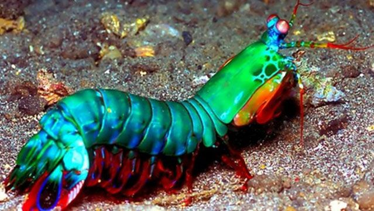

<!DOCTYPE html>
<html lang="pt-br"></html>  
<head>
    <meta charset="UTF-8" />
    <meta name="viewport" content="width=device-width" />
    <link rel="stylesheet" type="text/css" href="style.css" />
    <title>Fatos sobre o Stomatopoda</title>
</head>
  <body>
    <header><h1>Soco a 80km/h:<br> Conheça o Stomatopoda.</h1></header>

    <nav>  
        <ul>
        <a href="https://youtu.be/dQw4w9WgXcQ" target="_blank"><li>Página Inicial</li></a>
        <a href="https://youtu.be/dQw4w9WgXcQ" target="_blank"><li>Sobre</li></a>
        <a href="https://youtu.be/dQw4w9WgXcQ" target="_blank"><li>Contato</li></a>

        </ul>
    </nav>

    <main>
      <article>
        <h2 class="header-2">Fatos sobre o Stomatopoda:</h2>
        
        <section>
          <h3>Lindo como um arco-iris, mortal como uma bala...</h3>
          
        <div class="text-border"> 
            <p>
            <i>Odontodactylus scyllarus</i>, ou mais conhecido como:
            Camarão-Louva-Deus. Esse crustáceo pode<br />
            ser encontrado em toda a costa brasileira e tem esse nome devido a sua carapaça
            colorida, com cores bem<br />
            chamativas e vibrantes, como verde e laranja e com textura de
            leopardo.
          </p>
          <p>
            Mas o que ele tem de lindo, também tem de <b>mortal!</b> O nosso amigo anda
            muito bem equipado<br />
            com um par de patas dianteiras muito desenvolvidas, com uma força
            equivalente a de uma <b>arma calibre .22!</b>
          </p>
          <p>
            O impacto é tão poderoso que pode facilmente quebrar a carapaça de
            um carangueijo na <b>porrada!</b><br />
            Além de fazer a agua em volta dele <i>ferver!</i>
          </p>
        </div> 
          
            <h3 class="section-3-table">Classificação Científica:</h3>
          <table class="tabela">
            <tr>
              <th>Reino</th>
              <th>Filo</th>
              <th>Subfilo</th>
              <th>Classe</th>
              <th>Subclasse</th>
              <th>Ordem</th>
            </tr>
            <tr>
              <td>Animalia</td>
              <td>Arthropoda</td>
              <td>Crustacea</td>
              <td>Malacostraca</td>
              <td>Hoplocarida</td>
              <td>Stomatopoda</td>
            </tr>
          </table>
        </section>
        <section>
          <h3>Camarão de um soco...</h3>
          
          <div class="text-border-2">  
          <p>

            A evolução armou nosso amigo com duas patas com <b>um dos golpes mais
            poderosos e rapidos da natureza</b>,<br />

            tendo a velocidade de <b>720 Km/h!</b> e uma pressão de impacto de
            600 N/cm².
          </p>
          <p>
            Todo esse exagero da a ele o apelido de :<i>"Lagosta Boxeadora"</i>,
            podendo facilmente quebrar<br />
            conchas, carapaças e até o <b>vidro de um aquario.</b> O seu denperamento
            não é dos mais amigaveis, tendo que<br />
            ser manuseado com cautela, pois, o estressadinho ataca tudo que se
            mexe.
          </p>
        </div>
          <a class="link-soco" href="https://youtu.be/E0Li1k5hGBE?t=118" target="_blank"
            >Video mostrando a potencia do soco</a
          >
          
        </section>
        <section>
          <h3>Visão além do alcançe...</h3>
          
          <div class="text-border">
          <p>
            O armamento pesado não é a única coisa que nosso amigão tem na
            manga!
          </p>
          <p>
            Ele também conta um lindo par de olhos com 16 receptores de cor

            (para efeitos de compração, <i>o ser humano tem só 3</i>)<br />
            Isso significa que eles são capazes de enxergar
            <b>1 SEPTLHÃO DE CORES</b>,<br />
            podendo ver até raios ultravioletas (Aqueles raios emitidos pelo
            sol).
          </p>
            </div>
        </section>
        <section>
          <h3>Referências Bibliográficas</h3>
          <div  class="referencia">
          <ul>
            <a href="https://youtu.be/E0Li1k5hGBE" target="_blank"
              ><li>Video</li></a
            >
            <a
              href="https://www.nationalgeographic.com/science/article/natures-most-amazing-eyes-just-got-a-bit-weirder"
              target="_blank"
              ><li>National Geographic</li></a
            >
            <a
              href="https://theoatmeal.com/comics/mantis_shrimp"
              target="_blank"
              ><li>The OatMeal</li></a
            >
            <a href="https://pt.wikipedia.org/wiki/Stomatopoda" target="_blank"
              ><li>Wikipedia</li></a
            >
          </ul>
            </div>  
        </section>
      </article>
    </main>
    <footer>Conteúdo compilado por João Marcelo Franco Gomes, 2022.</footer>
  </body>
</html>